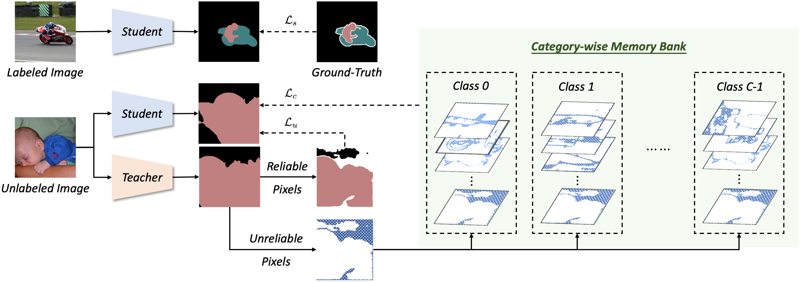

|
|
|
Haochen Wang
Shanghai Jiaotong University
No.800 Dongchuan Road
Shanghai Jiao Tong University
Shanghai, 200240, P.R.China
Email: wanghaochen0409[at]sjtu.edu.cn
|
Biography
Haochen Wang is currently a senior college student at School of Mechanical Engineering,
Shanghai Jiao Tong University (SJTU).
His research focuses on computer vision and partern recognition,
particularly on semantic segmentation.
News
|
Mar. 2022
|
One paper accepted in CVPR 2022!
|
|
June 2021
|
Join SenseTime as a research intern.
|
Publications
|

|
Semi-Supervised Semantic Segmentation Using Unreliable Pseudo-Labels
Haochen Wang*,
Yuchao Wang*,
Yujun Shen,
Jingjing Fei,
Wei Li,
Guoqiang Jin,
Liwei Wu,
Rui Zhao,
Xinyi Le
[Paper (CVPR 2022)]
[Project Page]
[Code]
|
|